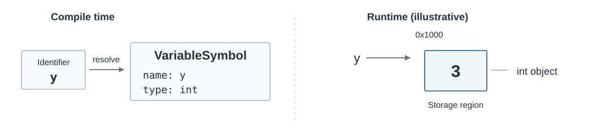
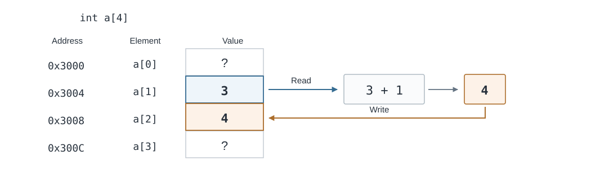

From Semantics to Execution: What Does an Expression Actually Do?¶
In previous labs, we studied symbol tables, scopes, and semantic analysis. For the program below, our compiler can now resolve x and y to their declarations, determine that both have type int, and check whether the addition and assignment are semantically valid.
Knowing that a program is valid does not yet tell us how to execute it. Before introducing any new terminology, let us break down what happens in x = y + 1;:
- Read the value currently stored in
y:3. - Add the constant
1to3, producing4. - Write the result,
4, intox.
This process reads y, but never reads the old contents of x. Both x and y are variable names, so why do we sometimes need the number a variable holds, and sometimes need a location we can write to?
That question is the focus of this lab and a necessary step toward code generation. The previous two labs established which variable a name refers to, what type an expression has, and whether the program is valid. To generate code, the compiler must also determine what to read, what to compute, and what to write at runtime. We will first explain these operations, then learn how to express them in LLVM IR in the next lab.
From Names to Objects to Values¶
Start with y = 3;. During name resolution, the y in the source code is an identifier. The compiler uses the symbol table to find its declaration and records information such as its name and type in a structure like VariableSymbol. A VariableSymbol is a data structure used by the compiler at compile time; it is not where the running program stores the integer 3.
To describe execution, we need the concept of an object. Here, “object” does not mean an instance of a class in an object-oriented language such as Java. For the simple variables we are discussing, think of an object as a unit of storage that exists at runtime, has an identity and a type, and can hold data. For example, int y; declares a variable object of type int. Executing y = 3; makes that object hold the value 3. If we later modify y, its stored value changes, but it is still the same variable object.
For now, we can understand a simple object in terms of three things: its identity, its type, and its current value. In a memory-based implementation, an object occupies a region of storage that we can locate using an address. However, an object is not the same thing as its address: the address locates the storage, while the object is the runtime entity that occupies it.

Figure 1: At compile time, an identifier is resolved to symbol information. At runtime, a storage location gives access to the int object named y. The address is illustrative.
This diagram uses a simple memory model to make the idea concrete. It does not imply that every source-language variable must occupy a separate physical memory location after optimization. We will first focus on the behavior required by the source program, then consider how the compiler represents it.
What does an object actually hold? This brings us to a value. After y = 3;, the object named y holds the value 3. Values do not always have to be read from variable objects, though: in y + 1, the integer constant 1 appears directly in the source code, and the addition produces a new value, 4.
Thus, an object is an entity that holds a value; a value is data that a computation can read, use, pass along, or produce. This explains the difference between y and 3: y can designate an object whose contents may change, whereas 3 directly represents an integer value.
One question remains: how does the compiler know what the data in an object means and which operations are valid on it? The answer is its type.
We encountered type checking in W6/W7. Now consider it from the perspective of execution. A declaration such as int y; tells us that y is an integer object, so an integer value read from it can be added to another integer. By contrast, p below is a structure object:
struct Point {
int x;
int y;
};
int main() {
struct Point p;
p.x = 3;
p.y = 4;
int sum = p.x + p.y; // Valid: adding two int members.
// p + 1; // Invalid: a Point is not an integer.
return sum;
}
The type struct Point tells the compiler that p contains two int members. The expression p.x designates one of those integer members, and p.x + p.y performs integer addition. Having integers inside p does not make the whole structure an integer that can be added to 1.
These examples show that a type determines how to interpret an object's data and which operations are permitted on it. For composite types such as arrays and structures, it also describes the object's components. The checks we performed during semantic analysis therefore have a concrete purpose: they ensure that runtime operations make sense under the language's rules.
Further Reading: How Can the Same Bits Have Different Meanings?
Computers ultimately store information as binary data made up of 0s and 1s. Suppose a storage unit contains the eight bits 01000001. Interpreted as an unsigned integer, they represent the decimal number 65. Interpreted using ASCII, the same bits represent the character 'A'.
The bits have not changed; the rules for interpreting them have. A sequence of bits alone is therefore not enough: we also need to know the type and representation rules used to interpret it.
This example borrows character notation from C. The current SPL language does not include char, and you do not need to learn the language rules for character types here.
We can now connect objects, values, and types: y designates an object of type int; that object currently holds the integer value 3; and y + 1 reads that value and performs integer addition. Yet in the full assignment x = y + 1;, the right side needs the value of y, while the left side needs a destination for writing to x. Knowing that both x and y + 1 have type int still does not explain this distinction.
When Does an Expression Need an Object, and When Does It Need a Value?¶
We often think of “evaluating an expression” as calculating a number. Expressions can do more than that: y + 1 computes an integer value, y designates a variable object, and x = y + 1 changes the contents of x. This also matches the C standard's description of an expression: it can compute a value, designate an object or function, or produce side effects.
Compare y with y + 1. If y has type int, both expressions have type int, but only y designates a particular object. In other words, a type tells us what kind of data an expression involves, but does not tell us whether the expression designates an object or simply produces a result. To describe that distinction, we need a value category.
In C, an expression that designates an object is called an lvalue expression. The name has a historical connection to the left side of assignment, which usually needs a target that can accept a write. However, an expression's category does not depend on which side it happens to appear on. For example, y is still an lvalue expression on the right side of x = y;. Other typical lvalues include a[i], which designates an array element, and p.x, which designates a member of the structure object p.
By contrast, an integer constant such as 3 or an arithmetic expression such as y + 1 provides a value without designating such an object. These are commonly called rvalue expressions.
| Expression | Value category | Reason |
|---|---|---|
y, (y) |
Lvalue | Designates the object named y; parentheses do not change the category. |
a[i], p.x |
Lvalue | Designates an array element or a structure member. |
3 |
Rvalue | Directly provides an integer value. |
y + 1, y < 10 |
Rvalue | Produces a computed result rather than designating an object to write to. |
In our simple memory model, determining which object an lvalue designates can often be understood as finding its storage location. An lvalue is nevertheless a semantic category of an expression, not a numerical memory address.
Reading a Value from an Object: Lvalue Conversion¶
The expression y designates an object, but the addition in y + 1 needs an integer value. How do we bridge that gap? We read the value currently stored in the object designated by y.
In C, for ordinary non-array lvalues, this process is called lvalue conversion. When a context needs a value, the lvalue is converted to the value stored in the object it designates. The result of the conversion is no longer an lvalue; it is a value available for further computation, which we can think of as an rvalue. For example, evaluating y + 1 after y = 3; first reads 3 from y, then adds the constant 1.
The distinction to keep in mind is that the expression y itself is an lvalue. Appearing on the right side of an assignment does not reclassify it. Lvalue conversion takes place because the addition needs its stored value. On the left side, x supplies the assignment's destination, so there is no need to read its old value first.
The following two examples illustrate how context determines what is needed.
Example 1: x = x + 1
In the last line, x appears twice. Both occurrences are lvalue expressions, and both designate the same variable object.
Their contexts, however, require different things.
The x on the right is an operand of x + 1. Addition needs an integer value, so we read the current value, 3, from the object it designates:
The x on the left is the assignment target. It must continue to designate the object so that the result, 4, can be written there. Its old value does not need to be read first.
x = x + 1
↑ ↑
│ └── Read the old value from the object
│
└────── Write the new value back to the same object
The read and the write access the same object, not two different objects named x.
Example 2: return x
The return statement needs an integer value to pass back to the caller. Even though there is no assignment operator here, x still needs to yield the value currently stored in its object: 3.
This also requires lvalue conversion:
Lvalue conversion depends on whether the context needs an object or a value, not on whether the expression appears to the left or right of an assignment operator.
The name lvalue conversion describes the shift in what we need from an expression. An lvalue expression designates an object. When its context needs the stored value, the conversion reads that value. Our focus shifts from which object this is to what value it currently holds.
This is often described as a shift from “lvalue semantics” to “rvalue semantics.” More precisely, the lvalue is converted to the value stored in its designated object, and the conversion result no longer has the original lvalue property. The essential operation is obtaining the stored value, rather than simply attaching a different category label to the expression.
This distinction also explains why the following assignment is invalid:
The expression x + 1 computes an integer value, but that result does not designate an object that can receive a write. It therefore cannot be the left operand of assignment.
We need one further distinction: designating an object does not necessarily mean that the object can be modified through that expression. C therefore defines the concept of a modifiable lvalue.
For example:
Here, x is both an lvalue and a modifiable lvalue, so it can be an assignment target.
Now consider a variable qualified with const:
The expression x still designates a particular object, so it is still an lvalue. However, the object cannot be modified through this expression, so x is not a modifiable lvalue.
Arrays provide another example:
The array expression a designates an array object and is an lvalue. In C, however, arrays are not modifiable lvalues: an ordinary assignment operator cannot assign an entire array.
| Expression | Lvalue? | Modifiable lvalue? | Valid target of ordinary assignment? |
|---|---|---|---|
An ordinary variable x |
✓ | ✓ | ✓ |
x declared as const int x |
✓ | ✗ | ✗ |
An array a |
✓ | ✗ | ✗ |
x + 1 |
✗ | ✗ | ✗ |
What About SPL?
The current SPL language does not have a const qualifier, so it has no lvalues that become non-modifiable specifically because of const.
The distinction between an lvalue and a modifiable lvalue is still useful. Whether an expression can serve as an assignment target ultimately depends on the language's assignment rules for that expression and its type.
Beyond Simple Variables: Arrays and Structures¶
Locating the object designated by a simple variable such as x is easy to picture. With a[i] or p.x, we must also determine which part of the larger object we want to access.
In the last line, a[1] on the right first designates the element at index 1. We then read its current value, 3, and compute 4. On the left, a[2] designates the element at index 2, where we write that result. Both sides require locating an element, but only the right side also requires reading its previous value.

Figure 2: The value of a[1] is used in the computation, and the result is written to a[2]. The addresses are illustrative, and the diagram shows the state after the assignment.
Similarly, p.x requires identifying the structure object p and then its member x. For p.x = 3;, we locate the member and write to it. For return p.x;, we locate the member and then read its stored value.
We have now separated assignment into several operations: locating an object, reading a value, performing a computation, and writing the result. This raises another question: does evaluating an expression merely produce a result, or can it also change the program's state?
Beyond the Result: Side Effects and Evaluation Order¶
Compare x + 1; with x = x + 1;. Both perform integer addition, but the latter also writes a new value back to x, changing the object's contents. An effect on program state during expression evaluation is called a side effect. In real programs, side effects can also include effects on the external environment, such as I/O.
Why must a compiler track them? Consider these two expression statements:
The first produces an unused result and has no other effect, so the compiler can usually omit it. The second cannot be removed simply because its return value is ignored: foo() might modify data or perform I/O. A compiler must understand both the result an expression computes and the effects of evaluating it.
This leads to a related question: when an expression has several subexpressions, what determines their evaluation order?
We have already discussed operator precedence. For example, a + b * c groups as a + (b * c), making the multiplication result an operand of addition. That determines grouping, but the syntax tree alone does not tell us whether a must be read before the values of b and c. Grouping and evaluation order are different: grouping determines the structure of the computation, while evaluation order governs when the computations and side effects occur relative to one another.
To see why order matters, consider this C example, which is not SPL code:
The expression x++ produces the old value of x and has the side effect of incrementing x. Which value does the second argument, x, read? The positions of the arguments do not answer that question. Under C's evaluation rules, there is no sequencing guarantee between the relevant evaluations of these two arguments. The modification of x and the computation that reads x are unsequenced, so this call has undefined behavior in C. It does not simply choose between two otherwise valid outcomes.
C uses the relation sequenced before to express ordering constraints between evaluations. If A is sequenced before B, the relevant evaluation of A must precede B. These language-level guarantees let the compiler determine which evaluations can be reordered and which must retain their order.
Further Reading: Sequenced Before, Undefined Behavior, and Optimization
In the C standard, sequenced before is a partial order. It does not require every subexpression to be evaluated from left to right. If a modification of a scalar object is unsequenced relative to another modification of that object, or to a value computation that reads it, the behavior is undefined in C.
Signed integer overflow is another common example of undefined behavior in C. Undefined behavior does not mean that a program must crash; it means that the language standard imposes no requirement for a particular outcome in that case. Optimizations must preserve the behavior guaranteed by the language, so a compiler can use assumptions that hold for programs with defined behavior. You can experiment with different optimization levels in Compiler Explorer.
A language may also specify whether a subexpression is evaluated at all. For example, C uses short-circuit evaluation for A && B: it evaluates A first and skips B if A is false.
Since x != 0 is false, 10 / x is never evaluated, so no division by zero occurs here. Some expressions therefore need to do more than compute values: they also determine whether another part of the code executes. We will return to this when translating control flow.
Keeping C and SPL Separate
The examples involving x++, C's argument evaluation order, undefined behavior, and short-circuit rules illustrate how language semantics constrain code generation and optimization. The current SPL language does not support ++. Whether SPL provides the same evaluation-order or short-circuit guarantees must be determined from SPL's own language specification.
How Can We Represent These Operations?¶
Return to x = y + 1;. We can now describe its behavior precisely: y designates an object, and its context requires reading the integer value stored there; addition produces a new value; x designates the destination; and assignment changes the contents of that object. A simple source-language expression implicitly involves locating objects, reading, computing, and writing.
To generate code, the compiler needs more than a prose description. It needs an intermediate representation (IR) that makes these operations explicit. In the next lab, we will introduce LLVM IR and see how a simple implementation uses load for reading, add for addition, and store for writing. Later, we will cover address calculations for arrays and structures, along with control-flow representations for conditional branches and loops.
This lab bridges the gap between checking that a program is valid and translating it: what operations does evaluating an expression require? Understanding those semantics gives each IR instruction a clear purpose.
In-Class Exercises¶
Exercise 1: Why Does the Same Variable Name Appear Twice?
Consider:
In the last line, explain what is needed from each occurrence of x and from y: an object or a value? Which objects must be read, and which object receives the final write?
Exercise 2: Trace the Operations in Each Expression
Analyze each assignment statement in execution order. Which expressions require locating an object? Which require reading a stored value? Which operations modify an object's contents? Finally, why does return x need to read a value without writing anything to x?